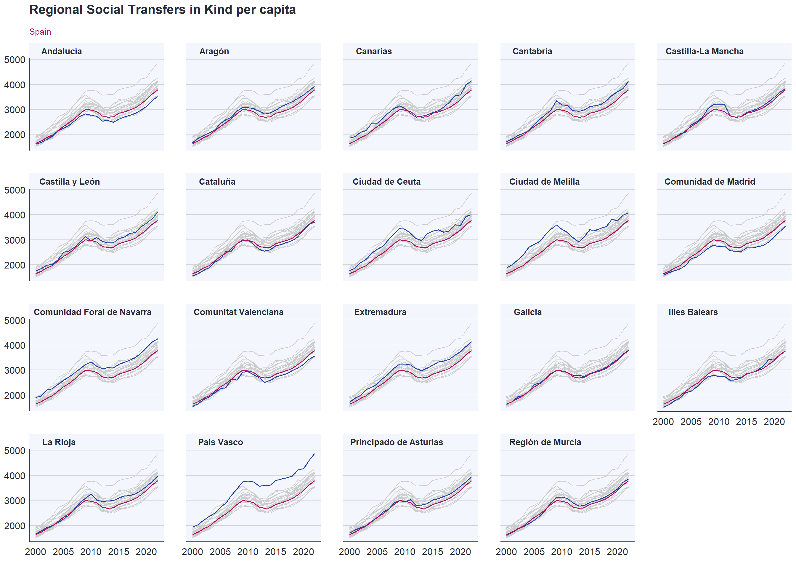

pacman::p_load(tidyverse, eurostat, luispack, ggtext)
hh2 <- get_eurostat("nama_10r_2hhinc", time_format = "num")
pop3 <- get_eurostat("nama_10r_3popgdp", time_format = "num")
temp <- hh2 %>%
filter(unit == "MIO_NAC" & na_item %in% c("D63") & str_detect(geo, "ES")) |>
select(geo, TIME_PERIOD, D63 = values) |>
left_join(pop3) |>
mutate(D63p = D63 * 1000 / values) |>
select(geo, TIME_PERIOD, D63p)
labels <- data.frame(
geo = c(
"ES11",
"ES12", "ES13", "ES21", "ES22", "ES23", "ES24",
"ES30", "ES41", "ES42", "ES43", "ES51", "ES52",
"ES53", "ES61", "ES62", "ES63", "ES64", "ES70",
"ES"
),
label = c(
"Galicia",
"Principado de Asturias", "Cantabria",
"País Vasco", "Comunidad Foral de Navarra", "La Rioja",
"Aragón", "Comunidad de Madrid",
"Castilla y León", "Castilla-La Mancha", "Extremadura",
"Cataluña", "Comunitat Valenciana", "Illes Balears",
"Andalucía", "Región de Murcia",
"Ciudad de Ceuta", "Ciudad de Melilla", "Canarias",
"España"
)
)
temp <- left_join(temp, labels) |>
na.omit()While preparing the previous post I wanted to do a nicer chart but I did not remember exactly how to do it. I wanted to have small multiples showing all lines in grey and highlighting the region shown in the chart. It was enough to remember how to add colours to the title with {ggtext}!. I remembered that there is a library for that (https://cran.r-project.org/web/packages/gghighlight/vignettes/gghighlight.html) and I included this chart in a training(https://r-graph-gallery.com/web-line-chart-small-multiple-all-group-greyed-out.html. But also remembered having seen in a post a simpler way to do it. After 15 minutes search I found it again and I put it here for the next time I need it (https://ikashnitsky.phd/2020/background-data/).
So let illustrate what to do. I will download D63 for the Spanish regions.
I have the data ready and I could do a normal chart.
ggplot() +
geom_line(data = temp |> filter(geo != "ES"), aes(TIME_PERIOD, D63p), linewidth = 0.7, colour = "#2644A7") +
facet_wrap(vars(label)) +
theme_luis() +
theme(strip.text = element_text(size = 11))Not bad but not impressive. We could add as a separate line the D63 per capita for the country to make the comparison easier.
ggplot() +
geom_line(data = temp |> filter(geo != "ES"), aes(TIME_PERIOD, D63p), linewidth = 0.7, colour = "#2644A7") +
geom_line(data = temp |> filter(geo == "ES") |> select(-label), aes(TIME_PERIOD, D63p), linewidth = 0.7, colour = "#AF155C") +
facet_wrap(vars(label)) +
theme_luis() +
theme(strip.text = element_text(size = 11))A bit better but here comes the trick. We want to plot all regions in all charts but with a light grey. We can add another geom and remove the variable like in Spain but in order to have lines we need to group by geo. If we did not have geo as an extra column we would need to dupplicate the column label and give it another name. Of course it has to be the first geom otherwise we will hide the single region and national lines.
ggplot() +
geom_line(data = temp |> filter(geo != "ES") |> select(-label), aes(TIME_PERIOD, D63p, group = geo), linewidth = 0.5, colour = "grey80") +
geom_line(data = temp |> filter(geo != "ES"), aes(TIME_PERIOD, D63p), linewidth = 0.7, colour = "#2644A7") +
geom_line(data = temp |> filter(geo == "ES") |> select(-label), aes(TIME_PERIOD, D63p), linewidth = 0.7, colour = "#AF155C") +
facet_wrap(vars(label)) +
theme_luis() +
labs(
title = "Regional Social Transfers in Kind per capita",
subtitle = "<span style = 'color:#AF155C;'>Spain </span>"
) +
theme(
strip.text = element_text(size = 11),
plot.subtitle = element_markdown(size = 11, lineheight = 1.2)
)
And the final touch. Add the values for the last year.
ggplot() +
geom_line(data = temp |> filter(label != "España") |> select(-label), aes(TIME_PERIOD, D63p, group = geo), linewidth = 0.5, colour = "grey80") +
geom_line(data = temp |> filter(label != "España"), aes(TIME_PERIOD, D63p), linewidth = 0.7, colour = "#2644A7") +
geom_line(data = temp |> filter(label == "España") |> select(-label), aes(TIME_PERIOD, D63p), linewidth = 0.7, colour = "#AF155C") +
geom_text(
data = temp %>%
filter(label != "España") |>
group_by(label) |>
slice_max(TIME_PERIOD),
aes(x = 2021, y = 2500, label = round(D63p)), color = "#2644A7", size = 3.5
) +
facet_wrap(vars(label)) +
theme_luis() +
labs(
title = "Regional Social Transfers in Kind per capita",
subtitle = "<span style = 'color:#AF155C;'>Spain = 3781 in 2022 </span>"
) +
theme(
strip.text = element_text(size = 11),
plot.subtitle = element_markdown(size = 11, lineheight = 1.2)
)